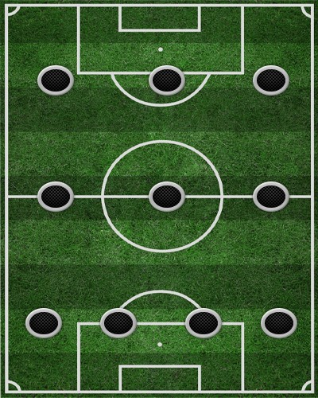

Схема 4-3-3 (“тотальний футбол”)
Гравці, що розташувалися за цією схемою, поступово покривають все поле. У разі розвитку атаки в ній беруть участь шість гравців, а захисники залишаються на підстраховці. З огляду на те, що вся атакуюча група знаходиться у штрафному майданчику та біля неї, захист висувається до центральної лінії — щоб не створювати розривів між півзахистом та захистом. Це автоматично спричиняє вибір на користь пресингу на чужій половині поля та ущільнення командної побудови в зоні м’яча. А значить, від захисників потрібно вміти справлятися з контратаками, які починаються довгим пасом на хід нападаючим, а півзахисту швидко накривати гравця, який володіє м’ячем, щоб звести подібні контратаки до мінімуму.
Головним же нововведенням, яке супроводжувало цю схему і дало їй назву, було те, що тепер ролі гравців були не фіксовані. Кожен міг грати роль захисника , півзахисника чи нападника залежно від ігрової ситуації. Ця «плинність» дозволила схемі перемогти італійську оборонну схему катеначчо .Поточна позиція команди: 3
Найкращий бомбардир: Русин (16)
Найкращий асистент: Гереро (7)